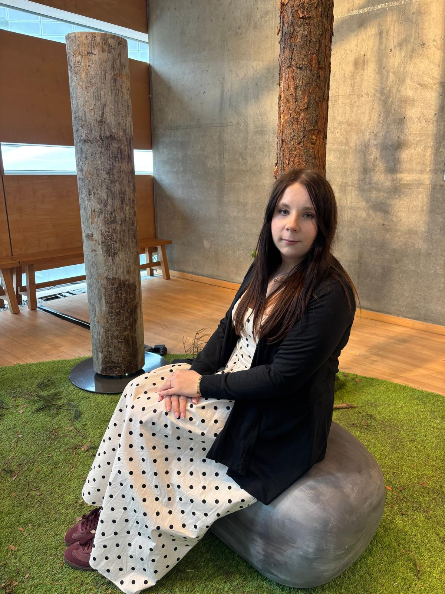
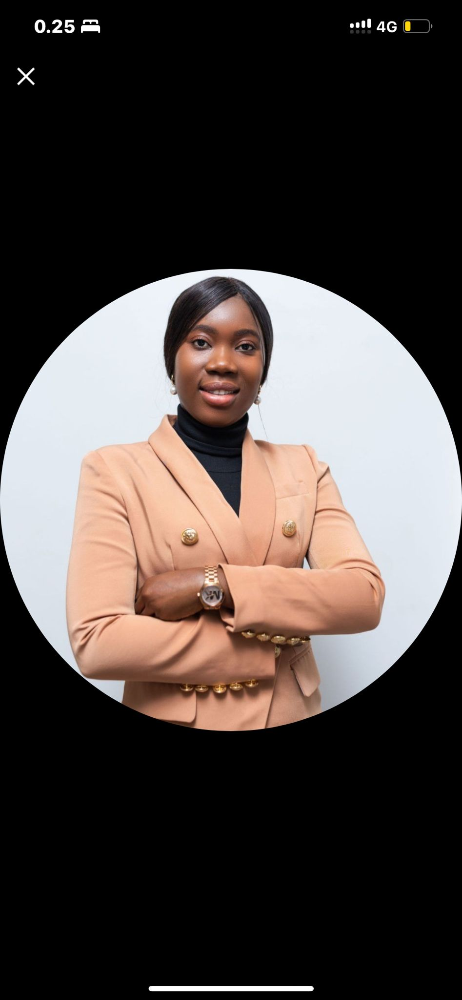

Vetify Oy × AnchorHer Summit Helsinki 2026
Presents
Raising Futures in the Age of AI & Vocational Transformation
About the Event
AnchorHer Summit is a gathering bringing together women educators and parents — especially single mothers — for one honest conversation about the children we are losing.
This is Finland's first summit dedicated to rebuilding the relationship between home and school. Because when teachers and parents stop talking, children stop showing up.
It takes a village to raise a child. AnchorHer is where the village comes back together. ⚓
Why It Matters
Our Panelists
A panel moderator, a researcher, and a woman who lived the challenge and built something out of it anyway. This is what the conversation looks like when it's real.
Benedicta is a social policy researcher, entrepreneur, and platform builder working at the intersection of AI, social systems, entrepreneurship, and public innovation. With a PhD in Social and Public Policy and a master's in Development and International Cooperation, her work focuses on how institutions, technology, and markets shape human opportunity, belonging, and execution under constraint.

She’s a a special guest speaker on lived experience , here’s her bio : I became a mum just days after turning 19, the same year I started university. Between lectures and nap times, I built an EdTech company. While that first venture didn't take off, the lessons I learned there paved the way for where I am now: CFO of TUNTU, scaling a tech company globally while being a mum.

Anna Fatima Sambou is a business development professional and tech-focused talent acquisition specialist with over a decade of experience in international business management, growth strategy, and organizational development. She has built her career at the intersection of technology, talent, and business growth, helping companies identify top IT talent, expand into new markets, and build sustainable teams.
Who Should Attend
Hosted By
Building the future of vocational education and support systems for young people globally.
Be part of the movement.
Questions?
matriarchy@vetify.tech